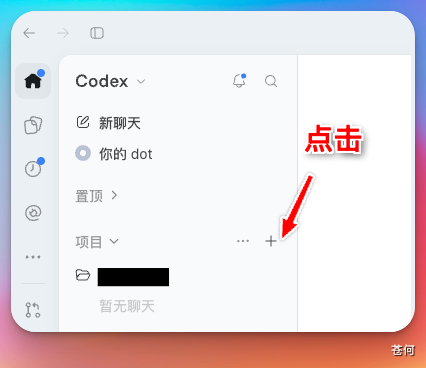
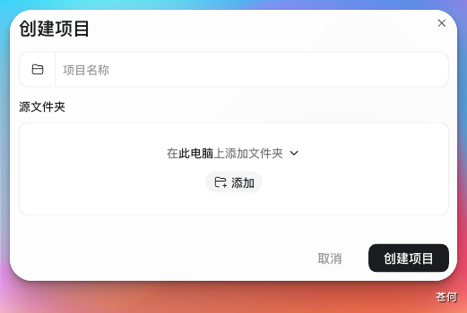
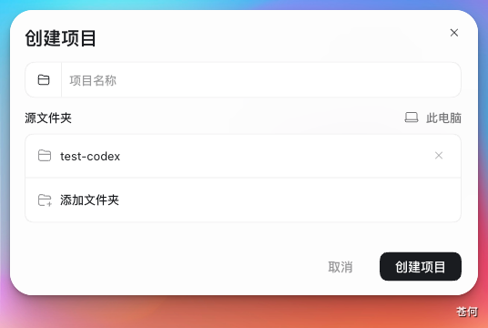
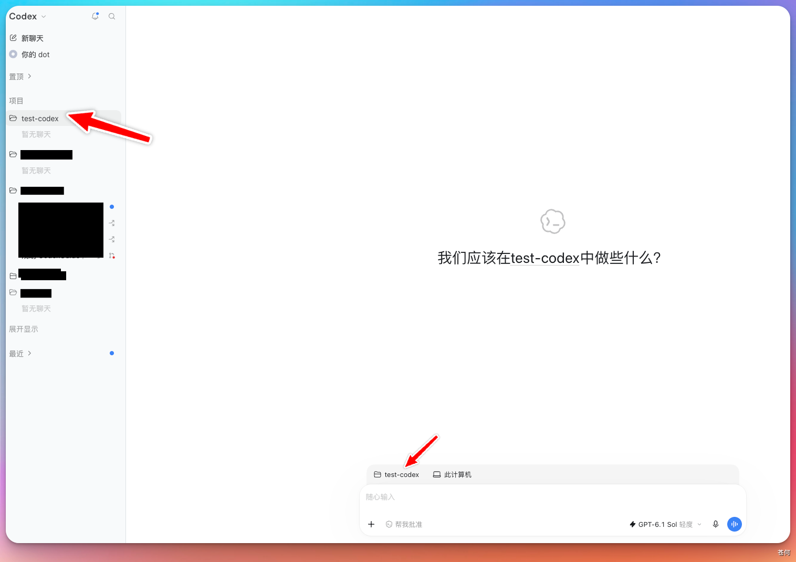
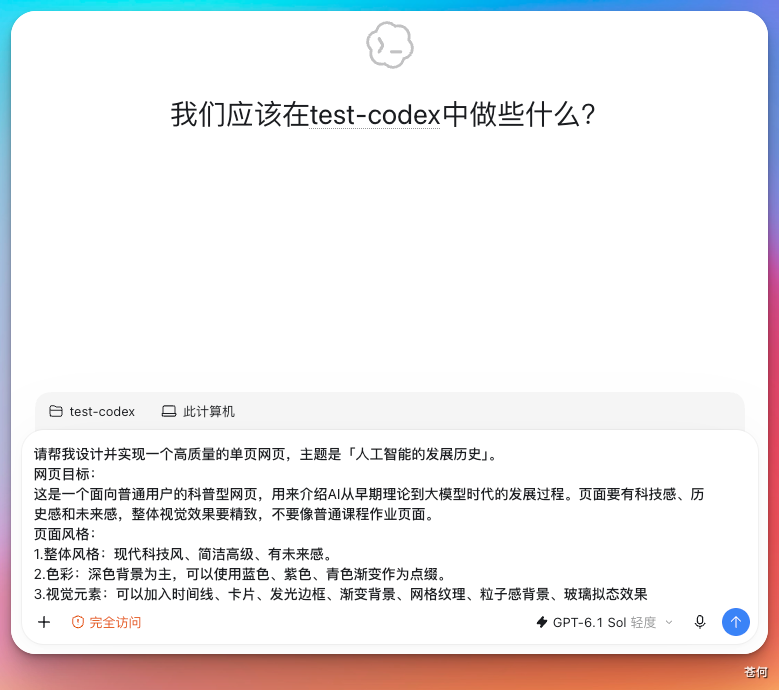
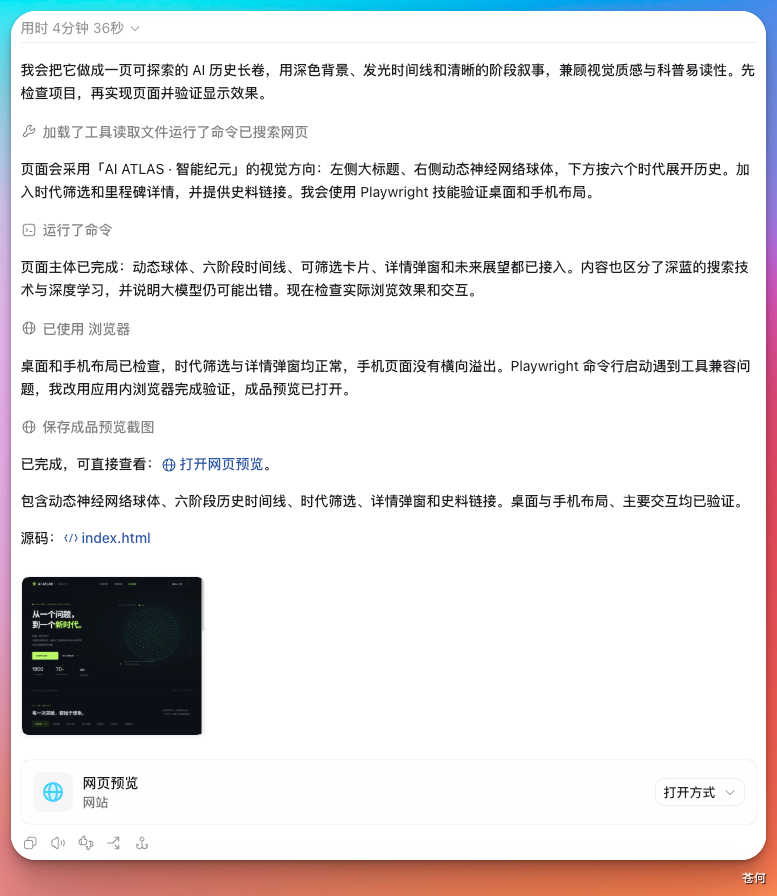
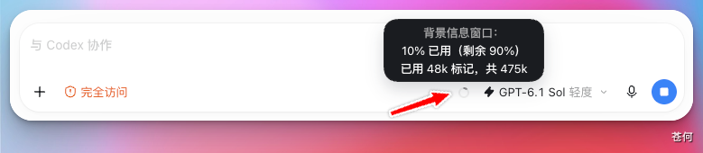
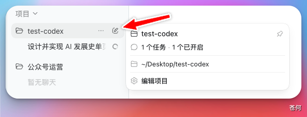

本章以“在 ChatGPT 桌面应用中使用 Codex 开发一个关于 AI 发展历史的简单网页”为例，走完一次完整的任务闭环，帮助你快速上手 Codex 的基本用法。
第一步：创建本地工作文件夹#
在本地新建一个空文件夹，作为 Codex 的工作目录。Codex 生成的所有文件都会保存在这里。

第二步：选择工作位置和聊天方式#
打开 ChatGPT 桌面应用并切换到 Codex 后，你可以直接新建聊天、创建项目，或者打开本地文件夹开始任务。
- 普通聊天或 Quick chat：适合目标明确、一次就能完成的独立任务。
- 本地项目（local project）：连接电脑上的一个或多个文件夹，项目中的多个聊天可以访问相同文件，但各自保留独立的聊天记录。
- ChatGPT 项目：用于集中管理聊天、上传文件、项目指令和连接的来源，但它本身不等于本地工作目录，也不会自动获得电脑文件夹的访问权限。
如果任务会持续一段时间、产生多个结果，或者多个聊天都要使用同一批本地文件，优先使用本地项目。一次性的简单任务直接新建聊天即可。
第三步：添加工作目录#
选择使用项目后，点击项目旁边的“+”按钮，进入创建项目窗口。

选择“在此电脑上添加文件夹”，然后选中第一步创建的文件夹。

确认文件夹无误后，点击“创建项目”。

项目创建完成后，对话框左下角会显示当前工作目录。确认路径正确，就可以开始输入任务了。

第四步：输入任务描述，开始执行#
在对话框中输入你的需求，点击发送，Codex 就会开始执行任务。

任务完成后，Codex 会在对话中展示结果，同时将生成的文件写入工作目录。

如果生成的是网页文件，可以通过文件预览或浏览器打开结果。具体入口和是否需要浏览器权限，以当前客户端显示为准。
第五步：逐步迭代#
对结果不满意时，直接在当前对话框中继续描述修改需求，Codex 会在已有基础上进行调整。
随着对话内容增加，Codex 会持续管理当前聊天的上下文。


如果使用的是"对话"模式而非项目，新建对话时需要重新指定工作目录，两个对话之间也是相互隔离的，不方便统一管理。这也是推荐使用项目的主要原因之一。
下一步#
下一步：任务设计。